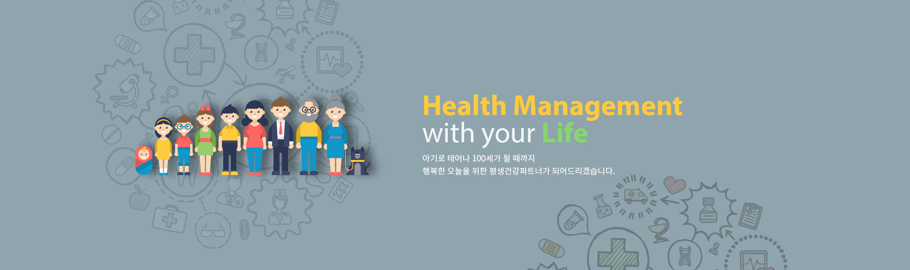

- 
서비스 소개
평생건강약속, 녹십자헬스케어가 앞장서겠습니다.
이 문항은 의사의 진료를 대신할 수 없습니다.
참고용으로만 활용하시기 바랍니다.
이 문항은 의사의 진료를 대신할 수 없습니다.
참고용으로만 활용하시기 바랍니다.
유방암의 초기에는 아무런 증상이 없습니다. 그러나 종양이 자라면서 멍울이 만져지고, 유방의 모양과 크기가 변하게 됩니다. 유두에서 맑은 액체 혹은 혈액 같은 분비물이 나오는 것도 의심할 수 있는 증상입니다. 특히 가까운 가족 중 유방암 환자가 있다면 규칙적인 자가검진과 함께 유방암 조기발견을 위한 정기검진이 꼭 필요합니다.